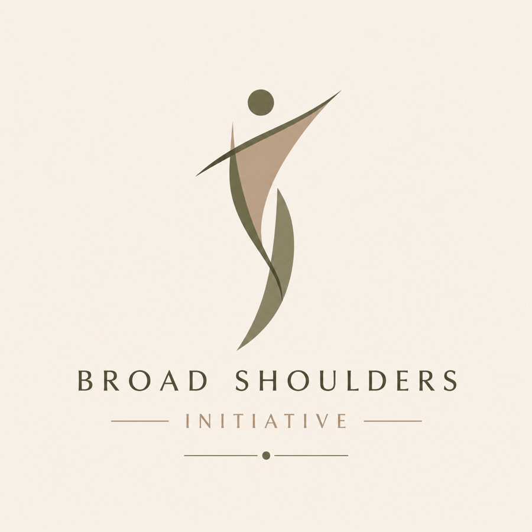
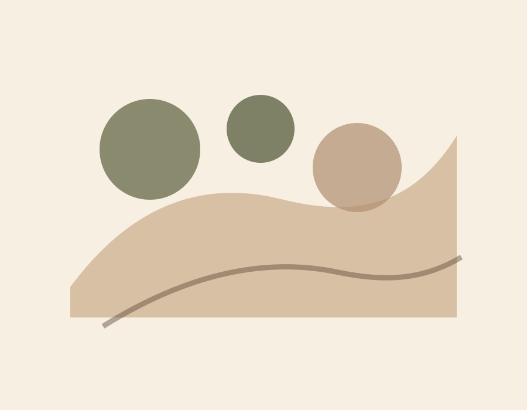

Stories With Care
Personal writing about body image, academic pressure, sports-related injury, family situations, and the parts of growing up that often go unnamed.
Explore storiesYouth-led mental health awareness
A youth-led platform for mental health awareness, storytelling, and support.

The Broad Shoulders Initiative is dedicated to spreading awareness on mental health for students, creating an inclusive community that is open to and comfortable with sharing problems students might be facing but feel scared to talk about.
Personal writing about body image, academic pressure, sports-related injury, family situations, and the parts of growing up that often go unnamed.
Explore storiesA simple starting point for support, reminders, and trusted links while the initiative continues to grow.
View resourcesBuilt as a foundation for future community engagement, advocacy, student voices, and reflective dialogue.
Learn about the visionFuture Goals
Our future goals are to create a community that challenges the stigma surrounding student mental health and fosters an environment where individuals feel comfortable sharing their stories and challenges.
Read the Full Vision
Placeholder: future community or founder image.
Stories / Blog
Submit a Story
Submissions may be anonymous. A future Google Form can be embedded here when ready.
Go to Submission Page